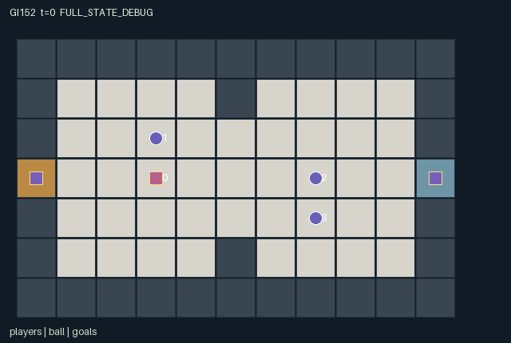

GI152 / SPATIAL
通道接力格球
队友创造传球和射门线路，对手拦截争夺；持球、体力与站位共同决定机会。
Original saved demonstration
Recorded native state, often authored scripts or interventions; information scope and failures are preserved in the original provenance. This is a saved demonstration, not live browser play.

Release verification episode
Untrained uniform legal actions. Actual JAX state sampled along the full original episode; full-state debug camera. No human performance or learning claim.

Run this game
crucibles play --game 152
Start Python locally, then open the address printed by the terminal. Installation, multiplayer, takeover and keyboard controls →
Objective, rewards & ending
Exact task contract
{
"objective": "Two teammates create passing and shooting lanes against two opponents; score three goals before the opposing team while managing stamina and possession.",
"natural_termination": "First team reaching three goals ends the match. A tied or unfinished match at clock 160 truncates without inventing a winner. Goal-round kickoffs are explicit in-match transitions, not episode resets.",
"interaction": "Teammate alignment determines pass availability. Every flight step can be intercepted by active one-cell bracing, contact tackling can steal before launch, bodies block travel and teammate/opponent movement reshapes lanes.",
"observation_access": "Fully observable playing field, all entity attributes, map, clock, score, restart state and event flags. Each observation adds own player id. No separate privileged role view is needed; all declared entity visibility is true."
}Declared per-step reward bounds: -1 to 1. Observability: fully_observable.
Rules
- Teams are players 0/1 versus 2/3; team amber attacks right and team indigo attacks left.
- One physical ball is either possessed, in axis-aligned flight, or loose.
- An aligned pass flies at one cell per tick for at most five cells; a center-row shot travels to the opposing goal.
- Standing on the ball cell catches automatically; bracing extends reach by one cell and protects a carrier from tackles.
- Contact tackles resolve before launching; exact-cell catches outrank braced adjacent catches, then rotating player priority breaks ties.
- Action costs consume stamina; resting recovers two up to five. Blocked legal movement still spends one.
- A scoring frame retains the goal position. The next forced-wait tick restores kickoff formation and gives possession to the conceding side.
- A goal gives +1 to both scoring teammates and -1 to both opponents; there is no pass-farming reward.
- First to three ends naturally; clock 160 truncates without assigning an unearned win.
Original mechanism document (historical status wording retained)
# Lane Relay Gridball **AUTHOR_ONLY_NOT_EXECUTED.** This is initial parentless proposal 152, source attempt 0, in the frozen train-only window. Candidate runtime execution, numerical R0, replay, rendered animation, learning and scientific acceptance have not occurred in this authoring task. Python AST/syntax and declarative data-shape/schema screens are authoring checks only; they do not establish any game outcome. Native contract: A=4, O=116, U=9, H=160. Observations are float32 `[A,O]`, actions int32 `[A]`, rewards float32 `[A]`, masks bool `[A,U]`, and state leaves are fixed-shape int32/bool arrays. Source SHA-256: `5ad8900a38e4b890b8ff1ebb06a3288622bab398814e035089f9f440a9c15dc8`. ## Task and rules Two teammates create passing and shooting lanes against two opponents; score three goals before the opposing team while managing stamina and possession. The one ball has a single position, owner, velocity and remaining flight count. A pass is not an instant reward exchange: it launches toward a teammate who must be aligned within five cells after simultaneous movement. The ball then moves one cell each raw step; the receiver may move, and a defender may occupy or actively guard a lane. Shooting is restricted to the center row, so teammates can draw pressure away from that row or offer a safer pass. Movement resolves first. Adjacent unguarded carriers can then be tackled; a newly stealing player cannot launch the ball on the same tick. Successful pass/shot launches follow. For the next ball cell, exact-cell catches outrank adjacent braced catches, then rotating priority resolves ties. Catching is checked before goal entry, so a bracing defender can save a shot from an adjacent cell. A wall or obstacle stops flight at the previous cell. An exhausted player may remain a body blocker but cannot brace, tackle or move until resting. Dribble-and-screen, give-and-go, guarded possession and pressing for contact turnovers are distinct plausible strategies. Their usefulness depends on teammate alignment, opponent guarding and stamina. Bracing denies a lane but costs stamina and a movement opportunity. Passing to a stationary teammate may be safe against a resting opponent and immediately intercepted when that opponent braces. None of these prospective statements establishes learnability, optimal play or strategic richness by measurement. After a goal, the actual scoring frame remains in state. A nonterminal goal enables only action 0 for one subsequent kickoff tick. That tick restores the fixed formation and stamina, gives the conceding team player 0 or 2 possession, clears transient event flags, preserves score and advances the match clock. It never calls reset and does not hide an episode reset. A natural final goal or a horizon boundary preserves the terminal frame under the absorbing raw contract. There is always exactly one active ball. A possessed ball position equals its carrier's position; otherwise its stored position is the actual loose/flight coordinate. Stamina is in 0..5, player positions remain unique, and at most one goal is credited per tick. These are declared source properties for later numerical checks. Future variants could change lane obstacles, recovery, permitted pass range or team roles; no such variant benchmark has run. Reset is deterministic and ignores the supplied key. ## Actions and simultaneous timing - `0`: Rest and recover two stamina. - `1`: Move north, spending one stamina. - `2`: Move east, spending one stamina. - `3`: Move south, spending one stamina. - `4`: Move west, spending one stamina. - `5`: Pass toward aligned teammate within five cells, spending one stamina. - `6`: Shoot toward opposing goal from center row, spending two stamina. - `7`: Brace: protect possession or catch within one cell, spending one stamina. - `8`: Attempt adjacent opponent tackle, spending two stamina. Movement rejects another agent's start-of-tick cell even if that agent moves; swaps are blocked. Among proposals to the same empty cell, the smallest (agent_id - t) mod A wins. Terrain or joint contention may make a legal movement attempt stationary. Out-of-range or masked actions deterministically become action 0. Legal interaction attempts may still do nothing when their resolution-phase prerequisites are absent; the action labels state their intended operation. All roles remain active until joint termination, so no eliminated role is silently deleted. Terminal masks retain action 0. ## Observation and renderer contract Fully observable playing field, all entity attributes, map, clock, score, restart state and event flags. Each observation adds own player id. No separate privileged role view is needed; all declared entity visibility is true. - Columns `0:1` (self): Own immutable player id. - Columns `1:12` (public): Clock,score amber,score indigo,restart pending,goal amber,goal indigo,pass event,catch event,intercept event,tackle event,joint done. - Columns `12:32` (public): Four players in id order: x,y,stamina,team,guard. - Columns `32:39` (public): Ball x,y,carrier id (-1 free),velocity x,velocity y,remaining flight,last-touch team. - Columns `39:116` (public): Static 7 by 11 public tile map, row-major yx. All coordinates are integer `[x,y]`; the tile map uses `[y,x]` indexing and a downward y axis. `scene.json` binds these actual map, position, active, visibility, attribute and event paths. It contains no invented motion, external image, executable markup or policy-only information. Public event channels are also present in observations. Counters and persistent levels are labeled separately from per-step events. Full-state inspection must be distinguished from role-visible playback. A real trajectory and its animation remain to be produced by the trusted implementation process. ## Termination, rewards and conservation First team reaching three goals ends the match. A tied or unfinished match at clock 160 truncates without inventing a winner. Goal-round kickoffs are explicit in-match transitions, not episode resets. A nonterminal call advances the int32 clock once. Natural completion takes precedence over the horizon. Terminal raw calls preserve every leaf, observation and clock, return zero rewards and all dones true, and preserve terminated/truncated. No episode reset occurs in raw_step. Declared finite observation bounds are -1..160; reward bounds are -1..1. These are game data bounds, not outcome thresholds. Rule-specific reward terms and conservation claims above are literal source design claims; they remain untested numerically. `manifest.json` declares every state leaf and safe structural invariants; source-dependent accounting identities require independent execution review. ## Source-line evidence - Ball, teams, obstacles and kickoff state: `candidate.py:12` — `def reset(self, key):` - Stamina, possession and forced-wait masks: `candidate.py:41` — `def legal_actions(self, s):` - Movement and action costs: `candidate.py:72` — `s["agent_pos"] = self.move(state,actions)` - Contact before launch: `candidate.py:78` — `# Contact steals precede launches; guarding protects the carrier for this tick.` - Physical flight and active interception: `candidate.py:106` — `# Every tick of travel is interceptable. Bracing extends reach by one cell.` - Scoring and preserved scoring frame: `candidate.py:127` — `s["goal_event"] = goals` - Explicit in-match kickoff: `candidate.py:131` — `# Scoring frame is retained. A separate forced-wait tick performs an in-match kickoff.` - Absorbing match completion: `candidate.py:150` — `s["terminated"] = jnp.any(s["score"] >= 3)` - Fully observed state layout: `candidate.py:158` — `def observe(self, s):` ## Prospective playthroughs and single-action interventions `playthrough.json` contains literal source-derived scripts and paired branches that change exactly one role action at one decision. Each script is explicitly `UNEXECUTED_AUTHOR_HYPOTHESIS`; its action dimensions and ranges were checked as data, while runtime legality, actual trajectories, numerical parity and success were not checked. No script result, score, learning gain or browser acceptance is invented. The paired hypotheses identify state paths for later comparison and do not substitute for measured causal traces. ## Community interface and provenance The supplied official JaxMARL README informed the separation between the homogeneous array kernel and a later agent-keyed parallel API with `__all__`; no upstream environment was copied. Pgx informed explicit legality, raw terminal state and explicit-key provenance, rather than importing a board-game implementation. Craftax supplied a reference for spatial objects, inventories and persistent consequences; this game is an original multiplayer design. PureJaxRL is an algorithm implementation reference, not a game library. The supplied Craftax recurrent PPO baseline credits PureJaxRL; its training/network/wrapper code was not copied, run or substituted for the frozen learner. Reference snapshots are hash-frozen in `author_input_freeze.json` and the assigned request: [JaxMARL README](https://github.com/bold-lab-ai/JaxMARL/blob/main/README.md), [Pgx README](https://github.com/sotetsuk/pgx/blob/main/README.md), [Craftax README](https://github.com/MichaelTMatthews/Craftax/blob/main/README.md), [PureJaxRL README](https://github.com/luchris429/purejaxrl/blob/main/README.md), and [Craftax recurrent PPO baseline](https://github.com/MichaelTMatthews/Craftax_Baselines/blob/main/ppo_rnn.py). API/design ideas only; copied upstream code: none. The public JaxMARL adapter belongs to the trusted integration layer: it should map fixed ids `agent_0` through `agent_3` to the existing array boundary, expose masks and set done `__all__` from `done_all`. No agent dictionary adapter or new learner is smuggled into this restricted one-class kernel. Source integer categories use int32, flags use bool, and the supplied uint32 reset key is external provenance rather than a hidden mutable state object. The source/manifest/scene hashes are bound in `generation_record.json`; `author_input_freeze.json` binds the verified frozen author inputs. No prior candidate, result, replay, rank, training feedback or final-test material was read. No numeric candidate execution, CSD3 operation, model download or background task was performed. Initial-window accounting remains four parentless proposals 150..153, 154 used or reserved of the existing 512 cap, with later windows unchanged. Authoring and visualization support alone do not establish learnability, non-isomorphism, generalization or meta-learning.
Commands
Roles & abilities
agent_0 Team amber, player 0; attacks right goal
agent_1 Team amber, player 1; attacks right goal
agent_2 Team indigo, player 2; attacks left goal
agent_3 Team indigo, player 3; attacks left goal
Observation permissions
Training receives only the original observation rows. Role cameras use declared visibility; debug cameras are explicitly marked. Local benchmark records log debug exposure and role takeover history.
Exact observation layout
[
{
"slice": [
0,
1
],
"visibility": "self",
"meaning": "Own immutable player id."
},
{
"slice": [
1,
12
],
"visibility": "public",
"meaning": "Clock,score amber,score indigo,restart pending,goal amber,goal indigo,pass event,catch event,intercept event,tackle event,joint done."
},
{
"slice": [
12,
32
],
"visibility": "public",
"meaning": "Four players in id order: x,y,stamina,team,guard."
},
{
"slice": [
32,
39
],
"visibility": "public",
"meaning": "Ball x,y,carrier id (-1 free),velocity x,velocity y,remaining flight,last-touch team."
},
{
"slice": [
39,
116
],
"visibility": "public",
"meaning": "Static 7 by 11 public tile map, row-major yx."
}
]Entity visibility & attributes
[
{
"id": "players",
"kind": "agent",
"count": 4,
"position": [
"agent_pos"
],
"active": [
"agent_active"
],
"visibility": [
"agent_visible"
],
"attributes": [
{
"state_path": [
"team"
],
"meaning": "0 amber, 1 indigo",
"display": "category"
},
{
"state_path": [
"stamina"
],
"meaning": "Available stamina, capped at five",
"display": "bar"
},
{
"state_path": [
"guard"
],
"meaning": "Bracing on this frame",
"display": "flag"
}
]
},
{
"id": "ball",
"kind": "object",
"count": 1,
"position": [
"ball_pos"
],
"active": [
"ball_active"
],
"visibility": [
"ball_visible"
],
"attributes": [
{
"state_path": [
"ball_carrier"
],
"meaning": "Player id; -1 means free ball",
"display": "category"
},
{
"state_path": [
"ball_velocity"
],
"meaning": "Axis-aligned flight direction",
"display": "direction"
},
{
"state_path": [
"flight"
],
"meaning": "Remaining movement ticks",
"display": "number"
},
{
"state_path": [
"touch_team"
],
"meaning": "Team that last touched or launched ball",
"display": "category"
}
]
},
{
"id": "goals",
"kind": "landmark",
"count": 2,
"position": [
"goal_pos"
],
"active": [
"goal_active"
],
"visibility": [
"goal_visible"
],
"attributes": [
{
"state_path": [
"goal_team"
],
"meaning": "Team that earns this goal",
"display": "category"
},
{
"state_path": [
"score"
],
"meaning": "Goals scored by that team",
"display": "number"
}
]
}
]Actual verification & provenance
Per-game execution receipt
{
"game": "gi152",
"status": "PASS",
"verification_revision": 2,
"source_sha256": "5ad8900a38e4b890b8ff1ebb06a3288622bab398814e035089f9f440a9c15dc8",
"seed": 20261101,
"runtime": {
"jax": "0.4.38",
"numpy": "1.26.4",
"devices": [
"TFRT_CPU_0"
]
},
"dimensions": {
"num_agents": 4,
"observation_size": 116,
"num_actions": 9,
"max_steps": 160
},
"checks": {
"eager_reset": {
"status": "PASS",
"seconds": 0.6506547927856445
},
"observation_spaces_legal_masks": {
"status": "PASS",
"seconds": 1.0680675506591797
},
"eager_step": {
"status": "PASS",
"seconds": 2.0116891860961914
},
"jit_reset": {
"status": "PASS",
"seconds": 0.044610023498535156
},
"jit_step": {
"status": "PASS",
"seconds": 0.7152323722839355
},
"eager_jit_integer_parity_float_measurement": {
"status": "PASS",
"seconds": 0.001077413558959961
},
"jit_vmap_reset": {
"status": "PASS",
"seconds": 0.0747520923614502
},
"jit_vmap_step": {
"status": "PASS",
"seconds": 0.7470877170562744
},
"outer_autoreset_api": {
"status": "PASS",
"seconds": 0.6438164710998535
},
"full_original_horizon_episode_and_render": {
"status": "PASS",
"seconds": 1.2129652500152588
}
},
"human_scores": null,
"browser_controls": "PENDING",
"failures": [],
"elapsed_seconds": 7.748063087463379,
"float_parity_max_abs": 0.0,
"numerical_parity": "EXACT",
"raw_terminal_absorbing": "PASS",
"terminal_outer_reset": "PASS",
"episode_steps": 160,
"scripted_random_returns": [
0.0,
0.0,
0.0,
0.0
],
"terminal": true,
"demo_information": "FULL_STATE_DEBUG",
"demo_frames": 28,
"render_roles_checked": 4
}Chromium control verification
{
"game": "gi152",
"status": "PASS",
"human_scores": null,
"engineering": true,
"checks": [
"catalog_selected_and_real_native_reset",
"keyboard_native_direction_command",
"dom_queue_and_native_step",
"second_participant_ownership_and_native_joint_step",
"all_roles_individually_controllable_no_role_cap",
"explicit_debug_camera",
"release_to_pure_ai_without_reset",
"close_session_preserves_log"
],
"ui_sha256": "96243f9de144b80b5e20a114330e2206bdcd58d3efc9c6f13bbc08b95cacc14d",
"keyboard_action_id": 1,
"seconds": 4.466958284378052
}Original identity and file hashes
{
"id": 152,
"key": "gi152",
"title": "通道接力格球",
"summary": "队友创造传球和射门线路，对手拦截争夺；持球、体力与站位共同决定机会。",
"tags": [
"团队球赛",
"站位协作"
],
"family": "spatial",
"dimensions": {
"num_agents": 4,
"observation_size": 116,
"num_actions": 9,
"max_steps": 160
},
"source_sha256": "5ad8900a38e4b890b8ff1ebb06a3288622bab398814e035089f9f440a9c15dc8",
"manifest_sha256": "31351c681b92e8bac753c141b0d53e4a4b96e2d5bd6946caa3d6e4ca233ebfd6",
"files": [
{
"file": "candidate.py",
"sha256": "5ad8900a38e4b890b8ff1ebb06a3288622bab398814e035089f9f440a9c15dc8",
"bytes": 10349,
"origin": "work/exp_2/game_incubator_v3/community_games222_225_visualization_root222_v1/native154_candidate/registry/v2/games/game-v3-00152/candidate.py"
},
{
"file": "manifest.json",
"sha256": "31351c681b92e8bac753c141b0d53e4a4b96e2d5bd6946caa3d6e4ca233ebfd6",
"bytes": 12047,
"origin": "work/exp_2/game_incubator_v3/community_games222_225_visualization_root222_v1/native154_candidate/registry/v2/games/game-v3-00152/manifest.json"
},
{
"file": "scene.json",
"sha256": "033666e803688e6caa14550ade95fe5d14f35584cbe698e212b7979251df8ea3",
"bytes": 6761,
"origin": "work/exp_2/game_incubator_v3/community_games222_225_visualization_root222_v1/native154_candidate/registry/v2/games/game-v3-00152/scene.json"
},
{
"file": "mechanism.md",
"sha256": "7ce6188f43de7ae8ab82a61e32f77cbc2c41250577bb0431e76903c5c97c1c04",
"bytes": 10650,
"origin": "work/exp_2/game_incubator_v3/sources/game-v3-00152/attempt_00/mechanism.md"
},
{
"file": "playthrough.json",
"sha256": "08485a8e57e11ea0947675b908dcdb90c6e63bc9fec8147ab7642ef2353eb832",
"bytes": 4629,
"origin": "work/exp_2/game_incubator_v3/sources/game-v3-00152/attempt_00/playthrough.json"
}
],
"original_status": "NATIVE154_REFERENCE",
"original_saved_replay": true,
"release_validation": "PASS",
"human_scores": null,
"browser_validation": "PASS"
}